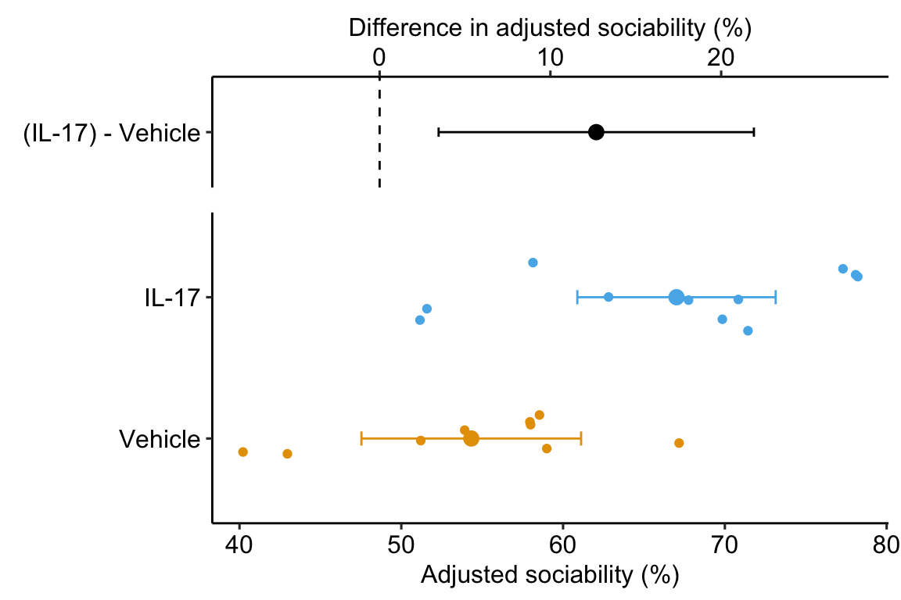

Chapter 17 Linear models for longitudinal experiments – I. pre-post designs
In a Longitudinal experiment, the response is measured in the same set of individuals over multiple time points. For example, in a glucose tolerance test (GTT), plasma glucose levels are measured at 0, 15, 30, 60, and 120 minutes (or some variation of this) after glucose has been given to the individual. The initial measure (time 0) is the baseline measure and subsequent measures are post-baseline measures. In a pre-post experiment, there is a single post-baseline measure. This chapter focuses on pre-post designs. The next chapter generalizes this information to longitudinal experiments with more than one post-baseline measure. For this chapter, I’ll use \(pre_i\) and \(post_i\) for the baseline and post-baseline measures of the response variable of indiviual \(i\). The change from baseline for individual \(i\) is \(change_i = post_i - pre_i\). The change from baseline is often called a change score.
Imagine two versions of an experiment where researchers are interested in the effect of different intestinal microbiomes on body weight.
- In the intial experiment of the study, the researchers harvest intestinal microbiomes from five mice fed on chow and from five mice fed on a high-fat diet (HFD) and transplant these into ten, male C57bl/6 mouse randomly assigned to donor (this is done by fecal transplant). We have five replicates of the non-obese microbiome and five of the obese microbiome. Weight is measured at baseline (the day of the transplant) and four weeks later. The expected difference at baseline is zero, because the mice are sampled from the same population and the treatment was randomly assigned.
- Additional experiments identified the potential role of inflammation-induced obesity in response to microbiome-derived lipopolysaccharide (LPS). In the second experiment, the researchers transplant intestinal microbiota from ten HFD mice into five male, wild-type C57bl/6 mice and five male, C57bl/6 mice in which the LPS receptor (CD14) has been knocked-out. Weight is measured at baseline (the day of the transplant) and four weeks later. The expected difference at baseline is not zero. It is not zero because the mice in each treatment are sampled from different populations (different genotypes). Even if we think that genotype shouldn’t have an effect on weight at baseline, the expected difference is not zero because the treatment is not randomized at baseline but prior to baseline.
This distinction is important because the best practice linear model depends on it.
17.1 Best practice models
If the treatment is randomized at baseline to individuals sampled from the same population
- Model \(\mathcal{M}_1\) – “ANCOVA model”
- model formula:
post ~ pre + treatment - a linear model that estimates the effect as the coefficient of treatment adjusted for the baseline measure, with \(post\) as the response.
- The response variable can either be the post-baseline measure or the change-score – the estimate of the treatment effect is the same.
- This is the best practice model if the expected difference at baseline is zero.
If the treatment is randomized prior to baseline (the groups are not composed of individuals sampled from the same population at baseline)
- Model \(\mathcal{M}_2\) – “change-score model”
- model formula:
change ~ treatment - a linear model that estimates the effect as the coefficient of \(treatment\), with the change score as the response. This is not the same as Model \(\mathcal{M}_1\) as there is no covariate in the model.
- This is the best practice model if there is no expectation of no expected difference at baseline.
These two models present vary different ways of thinking about what the treatment effect is. In the ANCOVA model, we think of the treatment effect as the difference between treated and control means at the post-baseline time. Because the post-baseline measure of individual i is partly determined by it’s value at baseline, variation in baseline values partly masks the effect of treatment. By adding baseline value as a covariate in the model, this masking effect of initial variation is eliminated.
In the change-score model, we think of the treatment effect as the mean difference in the change from baseline. The response changes from baseline to post-baseline in all individuals and we can compute the mean change for both treated (\(\overline{post_{tr} - pre_{tr}}\)) and control (\(\overline{post_{cn} - pre_{cn}}\)) levels. The treatment effect is the difference in these means.
\[\begin{align} \mathrm{effect} &= \overline{change}_{tr} - \overline{change}_{cn}\\ &= (\overline{post_{tr} - pre_{tr}}) - (\overline{post_{cn} - pre_{cn}}) \end{align}\]
In the change-score model, the treatment effect is a difference of differences. Differences of differences are interactions and an alternative way to estimate the same effect is with the interaction coefficient (\(\beta_3\)) of the factorial linear model
\[\begin{equation} weight = \beta_0 + \beta_1 treatment + \beta_2 time + \beta_3 treatment:time + \varepsilon \end{equation}\]
17.2 Common alternatives that are not recommended
- \(\mathcal{M}_3\) – “post model”
- model formula:
post ~ treatment - a linear model that estimates the effect as the coefficient of treatment, with \(post\) as the response.
- this model is valid but is not taking advantage of the increased precision of \(\mathcal{M}_1\)
- \(\mathcal{M}_4\) – “interaction model”
- model formula:
y ~ treatment*time - a factorial fixed-effects model that estimates the effect as the coefficient of the interaction \(treatment:time\). The response is the pre and post values stacked into a single column \(y\).
- this will give the same estimate as Model \(\mathcal{M}_2\) but the standard error of the effect will incorrect because of the unmodeled correlated error due to multiple (pre and post) measures taken from the same individual. Never use this for pre-post or longitudinal models.
- \(\mathcal{M}_4\) – “repeated measures model”
- doesn’t estimate the fixed effect but does compute a p-value of this effect as the \(treatment \times time\) interaction term of the ANOVA table. This is effectively equivalent to change-score model \(\mathcal{M}_2\).
- makes highly contstraining assumptions
- A repeated measures model is more common when there are multiple post-baseline measures
17.3 Advanced models
- \(\mathcal{M}_6\) – “linear mixed model”
- model formula:
y ~ treatment*time + (1|id) - a factorial linear mixed model that estimates the effect as the coefficient of the interaction \(treatment:time\). The response is the pre and post values stacked into a single column \(y\).
- the correlated error is implicitly modeled using the random factor \(id\).
- This will give the same estimate as Model \(\mathcal{M}_2\) and the same confidence interval and p-value if the Satterthwaite degrees of freedom are used.
- \(\mathcal{M}_7\) – “fixed effects with correlated error model”
- model formula:
y ~ treatment*time - linear model with fixed effects and correlated error due to repeated measures within individuals.
- This looks like the fixed effect model but the error is explicitly modeled to allow 1) correlation due to id and 2) heterogeneity due to time. The advantage of explicitly modeling the correlated error is the flexibility in the model of the error.
- estimates the effect as the coefficient of the interaction \(treatment:time\). The response is the pre and post values stacked into a single column \(y\).
- This is an alternative to the change-score model, but, as in the change-score model, use this only if the expected difference at baseline is not zero.
- \(\mathcal{M}_8\) – “constrained LDA”
- model formula:
y ~ time + treatment:time - As in a \(\mathcal{M}_7\), this is linear model with fixed effects and correlated error due to repeated measures within individuals. Unlike \(\mathcal{M}_7\), the treatment levels are constrained to have the same baseline mean, which is why there is no coefficient for \(treatment\). This model is known as Constrained Longitudinal Data Analysis (cLDA). The estimated treatment effect is effectively equal to that of the ANCOVA model (\(\mathcal{M}_1\)) but, compared to inference from the ANCOVA model, the SE is smaller, the CIs are narrower, and the p-value is smaller. This increased precision and power, however, comes at a cost to increased Type I error.
- This is an interesting alternative to the ANCOVA model.
17.4 Understanding the alternative models
The data used to explore the alternative models for analyzing pre-post data are from Figure 3F of Reed et al. 2020.
The data is from an experiment estimating the effect of xxx on a sociability in mice. For some of the models, we need a wide version of the data.table and for other models, we need a long version. In the wide version, values of \(pre\) and \(post\) are in separate columns and the data.table includes the column \(change\). In the long version, values of \(pre\) and \(post\) are stacked into a single column, and the column \(time\) (with values “pre” and “post”) is added to identify the time period of the measurement. There is no \(change\) column because it is not needed in the analyses using the data in long format.
| treatment | id | pre | post | change |
|---|---|---|---|---|
| Vehicle | mouse_1 | 63.99 | 62.8 | -1.2 |
| Vehicle | mouse_2 | 58.48 | 59.5 | 1.0 |
| Vehicle | mouse_3 | 59.77 | 42.5 | -17.3 |
| Vehicle | mouse_4 | 51.08 | 55.5 | 4.5 |
| treatment | time | id | sociability |
|---|---|---|---|
| Vehicle | pre | mouse_1 | 64.0 |
| Vehicle | pre | mouse_2 | 58.5 |
| Vehicle | pre | mouse_3 | 59.8 |
| Vehicle | pre | mouse_4 | 51.1 |
17.4.1 (M1) Linear model with the baseline measure as the covariate (ANCOVA model)
Model \(mathcal{M}_1\) is a linear model with the baseline variable added as a covariate. This is almost universally referred to as the “ANCOVA model”.
\[\begin{equation} \mathcal{M}_1\;\;\;post = \beta_0 + \beta_1 pre + \beta_2 treatment + \varepsilon \end{equation}\]
The model formula is
post ~ pre + treatment
| Estimate | Std. Error | t value | Pr(>|t|) | 2.5 % | 97.5 % | |
|---|---|---|---|---|---|---|
| (Intercept) | 20.4 | 18.86 | 1.1 | 0.295 | -19.4 | 60.2 |
| pre | 0.6 | 0.34 | 1.8 | 0.093 | -0.1 | 1.3 |
| treatmentIL-17 | 12.7 | 4.38 | 2.9 | 0.010 | 3.5 | 21.9 |
The third row (treatmentIL-17) of coefficient table ?? of Model \(\mathcal{M}_1\) contains the statistics of interest. The estimate is the treatment effect adjusted for the baseline value, or “what the treatment effect would be if all the baseline values were equal”. Adding the covariate increases precision, which is why the ANCOVA model is preferred to a simple analysis of the post-baseline values (the “post model”).
17.4.2 (M2) Linear model of the change score (change-score model)
Model \(\mathcal{M}_2\) is a linear model with the change score used as the response and treatment factor as the only \(X\) variable. This is equivalent to a Student’s t-test of the change scores.
\[\begin{equation} \mathcal{M}_2\;\;\;change = \beta_0 + \beta_1 treatment + \varepsilon \end{equation}\]
The model formula is
change ~ treatment
| Estimate | Std. Error | t value | Pr(>|t|) | 2.5 % | 97.5 % | |
|---|---|---|---|---|---|---|
| (Intercept) | -1.2 | 3.21 | -0.4 | 0.724 | -7.9 | 5.6 |
| treatmentIL-17 | 11.7 | 4.33 | 2.7 | 0.015 | 2.6 | 20.8 |
The second row (treatmentIL-17) of coefficient table ?? of Model \(\mathcal{M}_2\) contains the treatment effect, which is the simple difference between the mean “IL-17” and “Vehicle” change scores.
17.4.3 (M3) Linear model of post-baseline values without the baseline as a covariate (post model)
Model \(\mathcal{M}_3\) is a linear model with the post-baseline measure only. This is equivalent to a Student’s t-test of the post-baseline measures.
\[\begin{equation} \mathcal{M}_3\;\;\;post = \beta_0 + \beta_1 treatment + \varepsilon \end{equation}\]
The model formula is
post ~ treatment
| Estimate | Std. Error | t value | Pr(>|t|) | 2.5 % | 97.5 % | |
|---|---|---|---|---|---|---|
| (Intercept) | 53.5 | 3.37 | 15.9 | 0.000 | 46.4 | 60.6 |
| treatmentIL-17 | 14.2 | 4.55 | 3.1 | 0.006 | 4.6 | 23.7 |
- The second row (
treatmentIL-17) of coefficient table ?? of Model \(\mathcal{M}_3\) contains the treatment effect, which is the simple difference between the “IL-17” and “Vehicle” means. - If the experiment includes baseline measures and the expected difference at baseline is zero, the ANCOVA model (\(\mathcal{M}_1\)) should be used because the addition of the baseline measure as a covariate increases precision.
- If the experiment includes baseline measures and the expected difference at baseline is not zero, the change-score model (\(\mathcal{M}_2\)) should be used.
17.4.4 (M4) Linear model with factorial fixed effects (fixed-effects model)
Model \(\mathcal{M}_4\) is a linear model with \(treatment\) and \(time\) crossed.
\[\begin{equation} \mathcal{M}_4\;\;\;sociability = \beta_0 + \beta_1 treatment + \beta_2 time + \beta_3 treatment:time + \varepsilon \end{equation}\]
The model formula is
post ~ treatment*time
| Estimate | Std. Error | t value | Pr(>|t|) | 2.5 % | 97.5 % | |
|---|---|---|---|---|---|---|
| (Intercept) | 54.7 | 2.85 | 19.2 | 0.0 | 48.878 | 60.4 |
| treatmentIL-17 | 2.5 | 3.84 | 0.6 | 0.5 | -5.319 | 10.3 |
| timepost | -1.2 | 4.03 | -0.3 | 0.8 | -9.327 | 7.0 |
| treatmentIL-17:timepost | 11.7 | 5.43 | 2.2 | 0.0 | 0.692 | 22.7 |
17.4.5 (M5) Repeated measures ANOVA
| num Df | den Df | MSE | F | ges | Pr(>F) | |
|---|---|---|---|---|---|---|
| treatment | 1 | 18 | 99.6 | 6.89 | 0.21 | 0.017 |
| time | 1 | 18 | 46.5 | 4.71 | 0.08 | 0.044 |
| treatment:time | 1 | 18 | 46.5 | 7.30 | 0.11 | 0.015 |
17.4.6 (M6) Linear mixed model
Model \(\mathcal{M}_6\) is the linear mixed model
\[\begin{equation} \mathcal{M}_6\;\;\;sociability = (\beta_0 + \beta_{0j}) + \beta_1 treatment + \beta_2 time + \beta_3 treatment:time + \varepsilon \end{equation}\]
where \(\beta_{0j}\) is the random intercept for mouse \(j\). The model formula is
sociability ~ treatment*time + (1|id)
| Estimate | Std. Error | df | t value | Pr(>|t|) | 2.5 % | 97.5 % | |
|---|---|---|---|---|---|---|---|
| (Intercept) | 54.7 | 2.85 | 31.8 | 19.2 | 0.000 | 49.2 | 60.1 |
| treatmentIL-17 | 2.5 | 3.84 | 31.8 | 0.6 | 0.524 | -4.9 | 9.8 |
| timepost | -1.2 | 3.21 | 18.0 | -0.4 | 0.724 | -7.4 | 5.1 |
| treatmentIL-17:timepost | 11.7 | 4.33 | 18.0 | 2.7 | 0.015 | 3.2 | 20.2 |
The estimate of the treatment effect is not the 2nd row (treatmentIL-17) but the interaction row (treatmentIL-17:timepost) of coefficient table ?? of Model \(\mathcal{M}_6\). The coefficient of treatmentIL-17 (\(b_1\)) is an estimate of the effect of treatment at baseline. The coefficient of timepost (\(b_2\)) is the “slope” of the model – it is the estimate of the effect of the treatment on the reference (“Vehicle”) group. The coefficient of the interaction (\(b_3\)) is an estimate of the difference in slope between the Vehicle and IL-17 groups, that is, the difference in the response to treatment. This is the treatment effect.
The inferential statistics for the treatment effect (the interaction effect!) for the LMM (\(\mathcal{M}_6\)) are the same as those for the change-score model ($_3) except for the confidence intervals, which are too narrow in the coefficient table of the LMM. A better method for computing the confidence limit of the treatment effect for the LMM is to compute the interaction contrast of the model. The confidence interval of the contrast computed with the Satterthwaite degrees of freedom are identicle to the confidence intervals from the change-score model.
| treatment_trt.vs.ctrl | time_trt.vs.ctrl | estimate | SE | df | lower.CL | upper.CL | t.ratio | p.value |
|---|---|---|---|---|---|---|---|---|
| (IL-17) - Vehicle | post - pre | 11.7 | 4.33 | 18 | 2.6 | 20.8 | 2.7 | 0.015 |
17.4.9 Comparison table
| Model | Estimate | SE | t | Pr(>|t|) | 2.5 % | 97.5 % |
|---|---|---|---|---|---|---|
| ANCOVA | 12.68555 | 4.375280 | 2.899369 | 0.0099759 | 3.4545187 | 21.91659 |
| change-score | 11.71171 | 4.334247 | 2.702133 | 0.0145854 | 2.6057977 | 20.81763 |
| post | 14.18421 | 4.545934 | 3.120198 | 0.0059121 | 4.6335591 | 23.73486 |
| factorial | 11.71171 | 5.433377 | 2.155513 | 0.0378825 | 0.6923141 | 22.73111 |
| RM-ANOVA | 0.0145854 | |||||
| LMM-coef | 11.71171 | 4.334247 | 2.702133 | 0.0145854 | 3.2497551 | 20.17367 |
| LMM-contrast | 11.71171 | 4.334247 | 2.702133 | 0.0145854 | 2.6057977 | 20.81763 |
| CorErr-coef | 11.71171 | 4.334247 | 2.702133 | 0.0104425 | 3.2167443 | 20.20668 |
| CorErr-contrast | 11.71171 | 4.334247 | 2.702133 | 0.0144939 | 2.6125765 | 20.81085 |
| cLDA | 12.68555 | 4.172748 | 3.040094 | 0.0043266 | 4.5071126 | 20.86399 |
17.5 Example 1 – a single post-baseline measure (pre-post design)
17.5.0.1 Fit the model
m1 <- lm(post ~ pre + treatment, data = fig3f)17.5.0.2 Model checking
set.seed(1)
qqPlot(m1, id = FALSE)
The residuals are within the bounds reasonably expected of a sample from a normal distribution
spreadLevelPlot(m1)
##
## Suggested power transformation: 0.1054906The residuals do not show conspicuous heterogeneity.
17.5.0.3 Inference from the model
m1_coef <- cbind(coef(summary(m1)),
confint(m1))
knitr::kable(m1_coef,
digits = c(1,2,1,3,1,1),
caption = "Coefficient table of model m1") %>%
kable_styling()| Estimate | Std. Error | t value | Pr(>|t|) | 2.5 % | 97.5 % | |
|---|---|---|---|---|---|---|
| (Intercept) | 20.4 | 18.86 | 1.1 | 0.295 | -19.4 | 60.2 |
| pre | 0.6 | 0.34 | 1.8 | 0.093 | -0.1 | 1.3 |
| treatmentIL-17 | 12.7 | 4.38 | 2.9 | 0.010 | 3.5 | 21.9 |
Sociability in IL-17 treated fmr1 mice is 12.7 (95% CI: 3.5, 21.9, \(p = 0.01\)) percentage points higher than that in Control mice.
17.5.0.4 Plot the model

17.6 Working in R
(M1) Linear model with the baseline measure as the covariate (ANCOVA model)
m1 <- lm(post ~ pre + treatment, data = fig3f)
m1_coef <- cbind(coef(summary(m1)),
confint(m1))
knitr::kable(m1_coef,
digits = c(1,2,1,3,1,1),
caption = "Coefficient table of Model M1") %>%
kable_styling()| Estimate | Std. Error | t value | Pr(>|t|) | 2.5 % | 97.5 % | |
|---|---|---|---|---|---|---|
| (Intercept) | 20.4 | 18.86 | 1.1 | 0.295 | -19.4 | 60.2 |
| pre | 0.6 | 0.34 | 1.8 | 0.093 | -0.1 | 1.3 |
| treatmentIL-17 | 12.7 | 4.38 | 2.9 | 0.010 | 3.5 | 21.9 |
(M2) Linear model of the change score (change-score model)
m2 <- lm(change ~ treatment, data = fig3f)
m2_coef <- cbind(coef(summary(m2)),
confint(m2))
knitr::kable(m2_coef,
digits = c(1,2,1,3,1,1),
caption = "Coefficient table of Model M2") %>%
kable_styling()| Estimate | Std. Error | t value | Pr(>|t|) | 2.5 % | 97.5 % | |
|---|---|---|---|---|---|---|
| (Intercept) | -1.2 | 3.21 | -0.4 | 0.724 | -7.9 | 5.6 |
| treatmentIL-17 | 11.7 | 4.33 | 2.7 | 0.015 | 2.6 | 20.8 |
(M5) Repeated measures ANOVA
use aov_4 from the afex package, which allos input of a lmer model formula. Note that time is coded here as a random slope. This model would fail in lmer because there is only one time:id measure.
| num Df | den Df | MSE | F | ges | Pr(>F) | |
|---|---|---|---|---|---|---|
| treatment | 1 | 18 | 99.6 | 6.89 | 0.21 | 0.017 |
| time | 1 | 18 | 46.5 | 4.71 | 0.08 | 0.044 |
| treatment:time | 1 | 18 | 46.5 | 7.30 | 0.11 | 0.015 |
(M6) Linear mixed model
m6 <- lmer(sociability ~ treatment*time + (1|id), data = fig3f_long)
m6_coef <- cbind(coef(summary(m6)),
confint(m6)[3:6,])
m6_coef %>%
knitr::kable(digits = c(1,2,1,1,3,1),
caption = "Coefficient table of Model M6") %>%
kable_styling()| Estimate | Std. Error | df | t value | Pr(>|t|) | 2.5 % | 97.5 % | |
|---|---|---|---|---|---|---|---|
| (Intercept) | 54.7 | 2.85 | 31.8 | 19.2 | 0.000 | 49.2 | 60.1 |
| treatmentIL-17 | 2.5 | 3.84 | 31.8 | 0.6 | 0.524 | -4.9 | 9.8 |
| timepost | -1.2 | 3.21 | 18.0 | -0.4 | 0.724 | -7.4 | 5.1 |
| treatmentIL-17:timepost | 11.7 | 4.33 | 18.0 | 2.7 | 0.015 | 3.2 | 20.2 |
Use lmer.df = "Satterthwaite" as an argument in emmeans (not contrast!) to get the satterthwaite df for the interaction contrast.
m6_emm <- emmeans(m6,
specs = c("treatment", "time"),
lmer.df = "Satterthwaite")
m6_pairs <- contrast(m6_emm, interaction = c("trt.vs.ctrl"), by = NULL) %>%
summary(infer = TRUE)
# do not use profile or Wald intervals of coefficients, which are
# similar/equal to lmer.df = "asymptotic"
knitr::kable(m6_pairs,
digits = c(1,1,1,2,0,1,1,1,3),
caption = "Contrasts table of Model M6.") %>%
kable_styling()| treatment_trt.vs.ctrl | time_trt.vs.ctrl | estimate | SE | df | lower.CL | upper.CL | t.ratio | p.value |
|---|---|---|---|---|---|---|---|---|
| (IL-17) - Vehicle | post - pre | 11.7 | 4.33 | 18 | 2.6 | 20.8 | 2.7 | 0.015 |
(M7) Linear model with correlated error
m7 <- gls(sociability ~ treatment*time,
data = fig3f_long,
weights = varIdent(form= ~ 1 | time),
correlation= corSymm(form=~ 1| id))
m7_coef <- cbind(coef(summary(m7)),
confint(m7))
m7_coef %>%
knitr::kable(digits = c(1,2,1,1,3,1),
caption = "Coefficient table of Model M7") %>%
kable_styling()| Value | Std.Error | t-value | p-value | 2.5 % | 97.5 % | |
|---|---|---|---|---|---|---|
| (Intercept) | 54.7 | 2.21 | 24.8 | 0.0 | 50.331 | 59.0 |
| treatmentIL-17 | 2.5 | 2.98 | 0.8 | 0.4 | -3.360 | 8.3 |
| timepost | -1.2 | 3.21 | -0.4 | 0.7 | -7.455 | 5.1 |
| treatmentIL-17:timepost | 11.7 | 4.33 | 2.7 | 0.0 | 3.217 | 20.2 |
Use mode = "satterthwaite" as an argument in emmeans (not contrast!) to get the satterthwaite df for the interaction contrast.
m7_emm <- emmeans(m7,
specs = c("treatment", "time"),
mode = "satterthwaite")
m7_pairs <- contrast(m7_emm, interaction = c("trt.vs.ctrl"), by = NULL) %>%
summary(infer = TRUE)
knitr::kable(m7_pairs,
digits = c(1,1,1,2,0,1,1,1,3),
caption = "Contrasts table of Model M7.") %>%
kable_styling()| treatment_trt.vs.ctrl | time_trt.vs.ctrl | estimate | SE | df | lower.CL | upper.CL | t.ratio | p.value |
|---|---|---|---|---|---|---|---|---|
| (IL-17) - Vehicle | post - pre | 11.7 | 4.33 | 18 | 2.6 | 20.8 | 2.7 | 0.015 |
(M8) Constrained fixed effects model with correlated error (cLDA model)
cLDA function
clda <- function(data,
y_col,
treatment_col = "treatment",
time_col = "time",
id_col = "id"){
# warning - not debugged for missing
dt <- setDT(data)
n_groups <- length(unique(dt[, get(treatment_col)]))
n_times <- length(unique(dt[, get(time_col)]))
# create model matrix with no treatment effect at baseline
# part 1 - get the model matrix
form <- formula(paste0(" ~ ", treatment_col," * ", time_col))
model_matrix <- model.matrix(form, data = dt)
# part 2 - exclude columns
treat_cols <- 2:n_groups
exc <- c(1, treat_cols)
# constrained model matrix
X <- model_matrix[, -exc] %>%
data.table() %>%
clean_names()
dt <- cbind(dt, X)
rhs <- paste0(names(X), collapse = " + ")
model_form <- formula(paste0(y_col, " ~ ", rhs))
weight_form <- formula(paste0("~ 1 | ", time_col))
cor_form <- formula(paste0("~ 1 | ", id_col))
fit <- gls(model_form,
data = dt,
weights = varIdent(form = weight_form),
correlation= corSymm(form = cor_form))
return(fit)
}m8 <- clda(fig3f_long,
y_col = "sociability",
treatment_col = "treatment",
time_col = "time",
id_col = "id")
m8_coef <- cbind(coef(summary(m8)),
confint(m8))
m8_coef %>%
knitr::kable(digits = c(1,2,1,4,1,1),
caption = "Coefficient table of Model M8") %>%
kable_styling()| Value | Std.Error | t-value | p-value | 2.5 % | 97.5 % | |
|---|---|---|---|---|---|---|
| (Intercept) | 56.0 | 1.47 | 38.1 | 0.0000 | 53.1 | 58.9 |
| timepost | -1.7 | 3.15 | -0.5 | 0.5945 | -7.9 | 4.5 |
| treatment_il_17_timepost | 12.7 | 4.17 | 3.0 | 0.0043 | 4.5 | 20.9 |